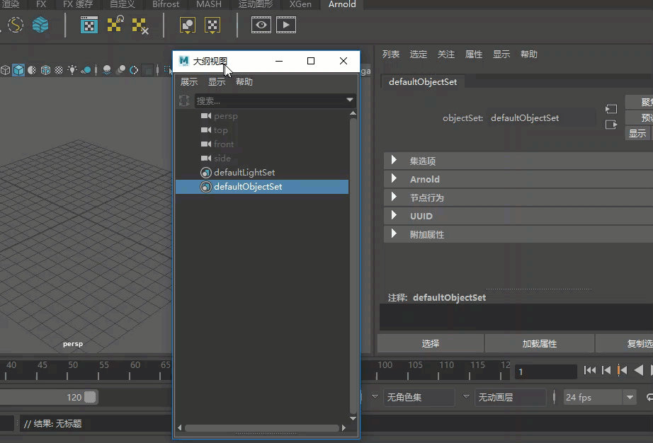
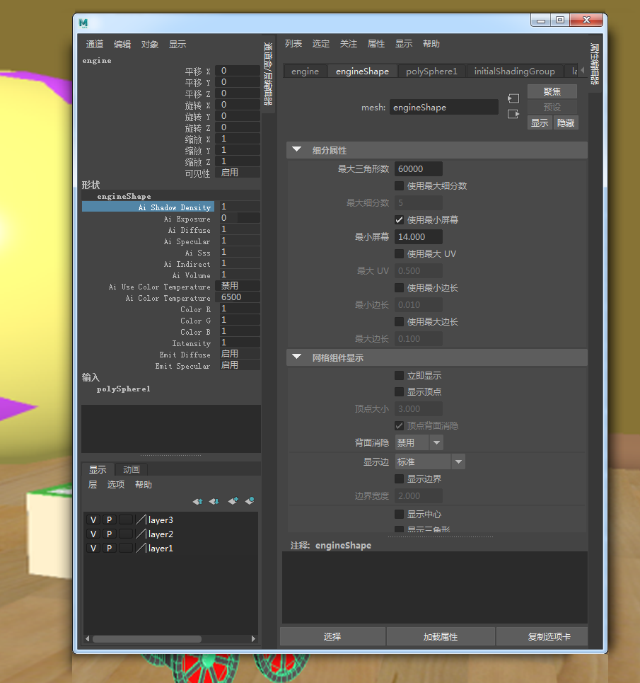
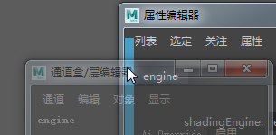
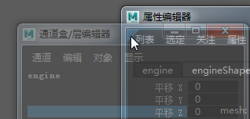

您可以停靠和取消停靠任何面板或窗口，包括“窗口”(Windows)菜单中的所有可用编辑器以及主窗口中的面板，例如属性编辑器、通道盒、时间轴和工具架等。如果隐藏某个面板或关闭某个窗口，则该面板或窗口将在最后一个位置中重新打开。

注： 在 Linux 中存在限制，即如果运行包含 gnome 2 的 Linux，则必须先将 compiz 设置为“标准”(Standard)以将其禁用，工作区停靠才起作用。但是，透明度将丢失，因此当悬停在停靠区域时窗口不会变得透明。如果以下步骤在 Windows 和 Mac 上不起作用，请确保已禁用“”(Windows > Workspaces > Disable Docking/Undocking)。
创建浮动的多面板窗口
可以将几个面板停靠在一起，形成一个浮动窗口，然后即可围绕其移动。

在第二个监视器上设置编辑器时，这特别有用。例如，可以将“属性编辑器”(Attribute Editor)与“通道盒”(Channel Box)停靠到一起，然后将它们保持在另一个监视器上，从而最大化视图面板中的工作空间。
- 在浮动窗口中打开任一面板或编辑器，或者取消停靠使其浮动。
-
在浮动窗口中将另一个面板拖动到该面板的一条边上。

若要创建选项卡层面（如果尚不存在），请将该面板拖动到目标窗口中的面板左上角，直到出现一个蓝色三角形为止，然后松开鼠标按钮。
